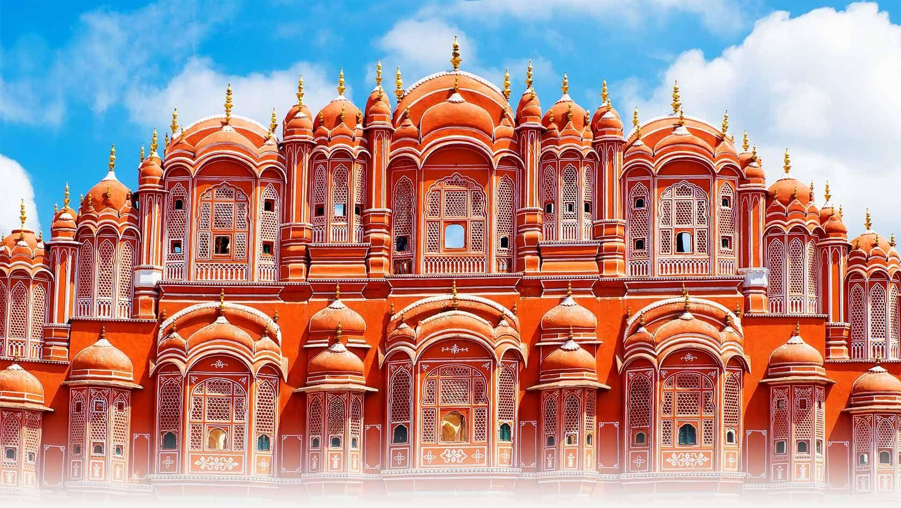

Historical Legacy: Jaipur, the capital city of Rajasthan, India, is steeped in rich history and cultural heritage. Founded in 1727 by Maharaja Sawai Jai Singh II, the city is renowned for its magnificent forts, opulent palaces, and vibrant bazaars, reflecting the grandeur and splendor of Rajasthan's royal past.
Architectural Marvels: Jaipur is famous for its architectural marvels, including the majestic Amber Fort, perched atop a hill overlooking the city. Built with red sandstone and marble, the fort boasts intricate carvings, sprawling courtyards, and panoramic views of the surrounding landscape. Other notable landmarks in Jaipur include the City Palace, Hawa Mahal (Palace of Winds), and Jantar Mantar observatory, all of which showcase the city's rich architectural heritage and artistic craftsmanship.
Cultural Hub: Jaipur is a vibrant cultural hub, known for its colorful festivals, traditional arts, and crafts. The city's bustling bazaars are filled with artisans selling handcrafted textiles, jewelry, pottery, and other souvenirs, providing visitors with a glimpse into Rajasthan's rich artistic traditions. Jaipur's lively street markets, cultural performances, and culinary delights make it a must-visit destination for travelers seeking an authentic Indian experience.
City of Palaces: Jaipur is often referred to as the "Pink City" due to the pink-hued buildings that adorn its historic center. The city's distinctive architecture, characterized by its terracotta-colored facades and intricate designs, adds to its charm and allure. Visitors can explore the opulent interiors of Jaipur's palaces, marvel at the intricate frescoes and mirror work adorning the walls, and immerse themselves in the grandeur of Rajasthan's royal heritage.
Modern Amenities: While Jaipur is steeped in history, it also offers modern amenities and comforts to travelers. The city boasts luxury hotels, fine dining restaurants, and shopping malls, catering to the needs of discerning tourists. Visitors can indulge in spa treatments, yoga retreats, and cultural workshops, ensuring a memorable and enriching experience in the heart of Rajasthan.
Heritage Conservation: Efforts have been made to preserve and protect Jaipur's rich architectural heritage through conservation projects and restoration initiatives. Organizations such as the Jaipur Virasat Foundation work tirelessly to safeguard the city's historic monuments and promote awareness about their cultural significance. These efforts ensure that future generations can continue to appreciate and enjoy Jaipur's timeless beauty and historical legacy.
Local Cuisine: Jaipur is a paradise for food lovers, offering a tantalizing array of traditional Rajasthani dishes and culinary delights. From spicy dal baati churma to mouthwatering laal maas (red meat curry), Jaipur's cuisine reflects the region's rich culinary heritage and vibrant flavors. Visitors can sample authentic Rajasthani delicacies at local eateries, street food stalls, and fine dining restaurants, experiencing the unique blend of spices and ingredients that make Rajasthani cuisine truly unforgettable.